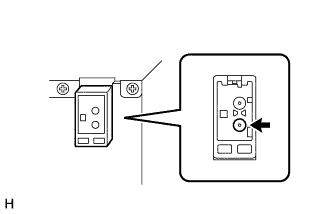
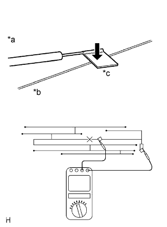
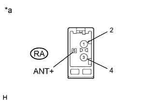

AUDIO AND VISUAL SYSTEM (w/o Multi-display) > Radio Broadcast cannot be Received (Bad Reception) |
| 1.CHECK RADIO RECEIVER ASSEMBLY |
Check the radio automatic station search function.
Check the radio automatic station search function by activating it.
|
| ||||
| OK | ||
| ||
| 2.CHECK OPTIONAL COMPONENTS |
Check for optional components (sunshade film, telephone antenna, etc.).
Check if any optional components that may decrease reception capacity, such as sunshade film or a telephone antenna, are installed.
|
| ||||
| OK | ||
| ||
| 3.CHECK RADIO RECEIVER ASSEMBLY |
|  |
Remove the antenna connector from the radio receiver assembly.
Turn the engine switch on (ACC) with the radio receiver assembly connector connected.
Turn the radio on and tune into AM mode.
Place a screwdriver, thin wire or other metal object on the radio receiver antenna jack and check that noise can be heard from the speaker.
|
| ||||
| OK | |
| 4.CHECK GLASS ANTENNA |
|  |
Check for continuity of the antenna.
| *a | Tester Probe |
| *b | Antenna Wire |
| *c | Tin Foil |
|
| ||||
| OK | |
| 5.CHECK RADIO RECEIVER ASSEMBLY |
|  |
Disconnect the RA radio receiver assembly connector.
Measure the voltage according to the value(s) in the table below.
| Tester Connection | Switch Condition | Specified Condition |
| RA-5 (ANT+) - Body ground | Engine switch on (IG), radio switch on | 11 to 14 V |
| *a | Component without harness connected (Radio Receiver Assembly) |
|
| ||||
| OK | |
| 6.CHECK ANTENNA CORD SUB-ASSEMBLY |
Remove the antenna connector of the radio receiver and antenna.
Measure the resistance between the antenna and radio receiver to check for an open circuit in the antenna cord.
Measure the resistance between the antenna cord and body ground to check for a short circuit in the antenna cord.
|
| ||||
| OK | |
| 7.REPLACE HOLDER ANTENNA ASSEMBLY |
Replace the holder antenna assembly and check if radio broadcasts can be received normally (Click here).
|
| ||||
| OK | ||
| ||